地政学
ヤズドはテヘランや港湾都市の前面には立ちませんが、イスファハーン、ケルマーン、砂漠路を結ぶ内陸の結節点です。国境紛争の前線ではなく、制裁下の国内物流、巡礼、鉱工業、観光を支える後背地として重要です。
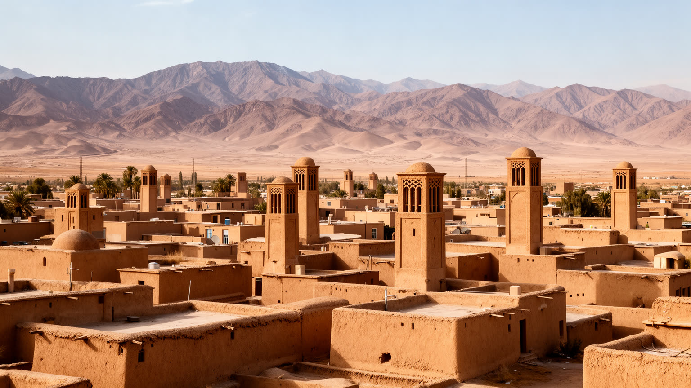
🇮🇷 イラン / 西アジア / World City Atlas
イラン高原の砂漠縁に残る風塔、カナート、日干しレンガの歴史都市です。ゾロアスター教、イスラム建築、絹織物、菓子、鉱工業、観光、猛暑と水不足を同時に読む都市です。
都市の骨格
ヤズドはイラン高原の交易路と砂漠の境目で、風塔、厚い土壁、地下水路、屋根の動線を組み合わせて暮らしてきました。世界遺産の旧市街は観光地である前に、乾燥と熱に応答した生活技術の集積です。
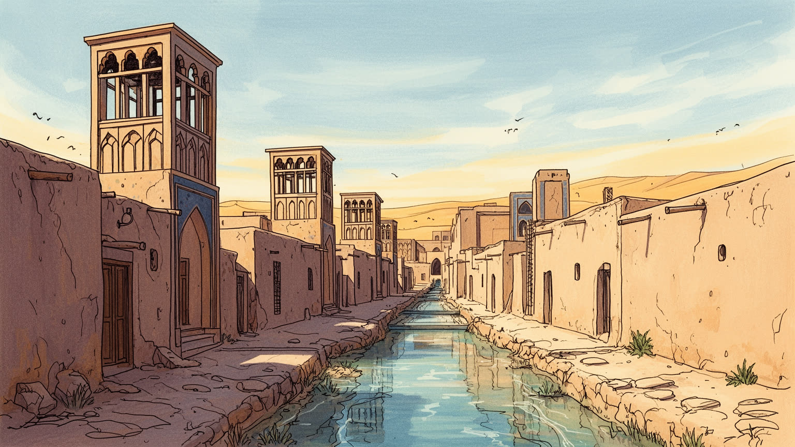
ヤズドはテヘランや港湾都市の前面には立ちませんが、イスファハーン、ケルマーン、砂漠路を結ぶ内陸の結節点です。国境紛争の前線ではなく、制裁下の国内物流、巡礼、鉱工業、観光を支える後背地として重要です。
絹織物、テルメ、菓子、陶磁器の職人仕事に加え、建材、金属、鉱業関連、機械、大学の技術人材が都市を支えます。観光の表面だけでなく、工場、家族経営の店、運送、水管理に働く人の時間が都市経済でもあります。
ゾロアスター教の拝火神殿と沈黙の塔、金曜モスク、フセイニーヤ、バザールが近くにあります。宗教は遺産展示ではなく、葬送、巡礼、追悼、商売の暦、家庭の菓子作りに続く生活の秩序であり長く深い記憶なのです。
旧市街の路地、屋上、日陰の中庭は美しい一方、住民には水不足、猛暑、住宅更新、雇用、若者の転出が課題です。観光が修復費と仕事を生み、同時に家賃や店舗構成を変える緊張もあります。今も工夫が必要なのです。
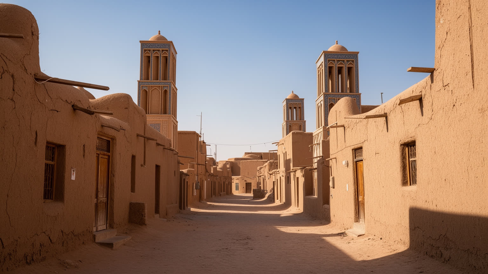
ヤズドの旧市街は、砂漠で涼しさを買うのではなく作り出してきた都市です。日干しレンガの壁は熱をゆっくり受け止め、細い路地は直射日光を避け、曲がった通路は砂塵と強い風を弱めます。屋根の高さ、壁の厚み、中庭の配置、地下室、風塔はばらばらの装飾ではなく、暑さと乾燥に対する一体の設計です。都市の外には砂漠と山地があり、内部には市場、モスク、住宅、貯水槽、工房が密に入り込みます。広い大通りよりも、人が影を選んで歩ける連続した路地が生活を支えてきました。近代化で車道、空調、鉄筋コンクリートが増えても、旧市街の環境知は失われていません。気候危機の時代には、ヤズドの伝統建築は懐古的な景観ではなく、低エネルギーで暮らすための都市技術として読み直されます。さらに旧市街の価値は、建物単体より街区全体の連続性にあります。門をくぐる角度、壁沿いの小さな凹み、屋根から屋根へ移る視線、日暮れに人が集まる小広場が、暑い季節の行動を細かく助けます。観光用に磨かれた通りだけでなく、修理中の家、生活用品を売る店、学校へ向かう子どもの道を含めて見ると、砂漠都市の知恵は日常の習慣として残っていることが分かります。都市計画として見るなら、ここには冷房以前の公共空間論があります。移動、休息、商売、礼拝が影の連鎖で結ばれ、暑さを避ける行動が街の形を決めています。
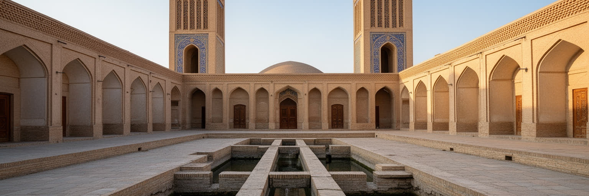
ヤズドを象徴する風塔は、景観を飾る塔ではありません。上空の風を室内へ導き、地下室や水面と組み合わせて体感温度を下げる装置です。カナートは山麓の地下水を緩い勾配で都市へ運び、地表の蒸発を避けながら生活と農地を支えてきました。貯水槽、ヤフチャール、浴場、庭園は、水が貴重であることを前提に設計されています。水の配分は技術だけでなく、権利、労働、信頼、維持管理の問題でもありました。井戸を掘る人、地下水路を掃除する人、分配を見守る人がいなければ、都市は続きません。今日の水不足と地下水低下は、この古い制度を単純に復元すれば解決する問題ではありません。それでもヤズドの水文化は、乾燥地の都市が水を隠れた公共財として扱う必要を教えます。風塔もカナートも、富裕な邸宅だけの装置ではなく、街の共同利用と結びついていました。水場の近くには会話、商売、儀礼、休息が生まれ、涼しさは社会関係を作る条件にもなりました。現代の配管や空調が便利さを広げた一方で、水源の限界を見えにくくした面もあります。ヤズドを歩くと、地上の塔と地下の水路が同じ都市を上下から支えていることが分かります。水の技術は、目立つ塔よりも見えない管理で成り立ちます。掃除、修理、使用順、費用負担をめぐる合意が崩れれば、どれほど優れた構造でも都市の基盤にはなりません。
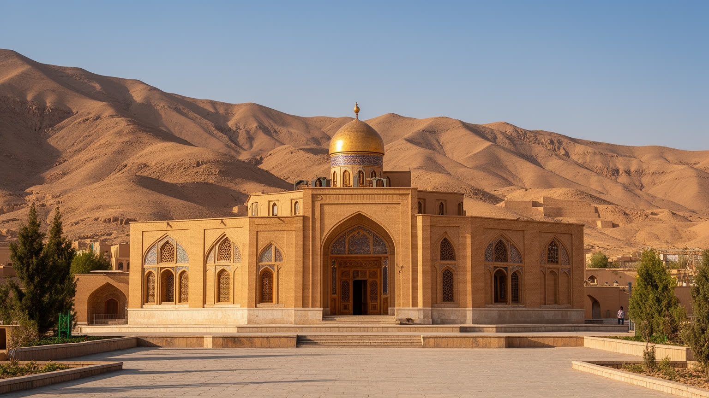
ヤズドはイランに残るゾロアスター教共同体を考えるうえで重要な都市です。拝火神殿の火、沈黙の塔、共同体の学校や墓地は、古代宗教の観光記号である前に、少数派が近代国家の中で生活を続けてきた場所です。イスラム化後もこの地域に信仰が残った背景には、砂漠の隔たり、商業、職人仕事、共同体内部の結束があります。訪問者は神秘的な遺跡として見がちですが、そこには結婚、葬送、教育、移住、差別、保存費用といった現実があります。宗教遺産を読むには、炎や塔の美しさだけでなく、少数派がどのように都市の中で働き、学び、他の住民と関係を結んできたかを見る必要があります。ヤズドの宗教的厚みは、イスラム都市の中に別の記憶が重なっている点にあります。共同体の規模が小さいほど、寺院や墓地の管理、若い世代の婚姻、言語や儀礼の継承は重い課題になります。同時に、ゾロアスター教の存在はヤズドの多層性を世界へ伝え、観光と研究を呼び込みます。大切なのは、少数派を古代の名残として消費するのではなく、現在も都市で暮らす住民として扱うことです。祈りの場所は、歴史展示である前に生活の尊厳を守る場所です。近隣のムスリム住民との日常的な関係も重要です。市場、学校、職場、行政手続きで共有される都市生活があるからこそ、宗教の違いは抽象的な対立だけでは語れません。
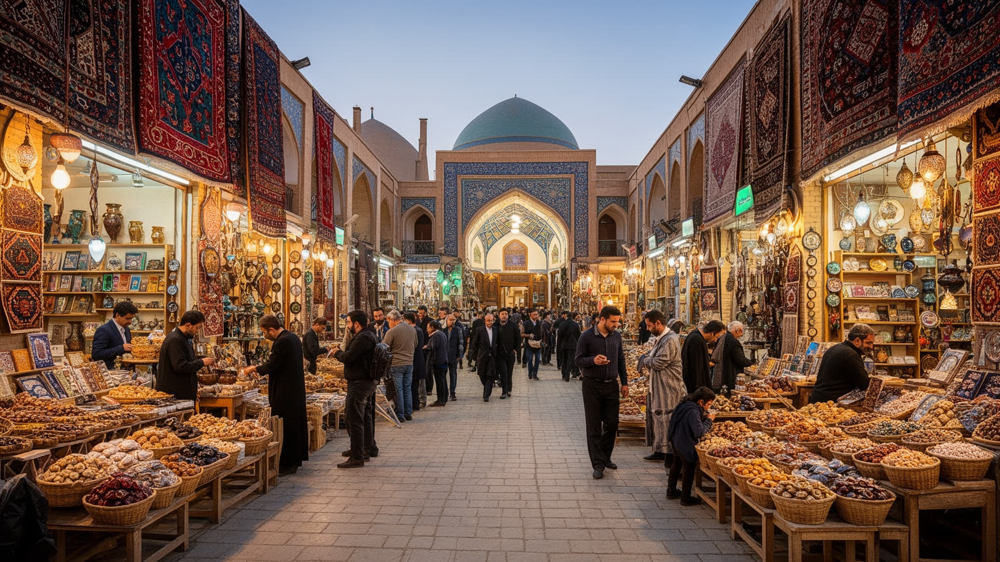
ヤズドの経済は、旧市街のバザール、工房、家族経営の菓子店、織物の技術からも読めます。テルメと呼ばれる絹やウールの文様布、絨毯、陶磁器、銅細工、菓子作りは、観光客の土産であると同時に、都市の技能継承の場です。店の奥には仕入れ、信用、親族労働、弟子入り、季節の需要、巡礼客と観光客の流れがあります。制裁や通貨下落は輸入原料、機械、旅行需要に影響し、小さな工房ほど価格変動を受けやすくなります。一方で、伝統産品は地元の誇りと雇用を作り、旧市街の建物を使い続ける理由にもなります。手仕事を単なる伝統として固定すると、若い職人の賃金や販路の問題が見えません。ヤズドのバザールは、保存された景観であると同時に、変化する経済の現場です。菓子店の箱、織物の柄、陶器の色は、家庭の贈答、結婚、宗教行事、旅行土産をつなぎます。オンライン販売や観光客向けの包装が増えても、品質を見極める目や店主との信用は簡単に置き換わりません。バザールの通路を歩くことは、商品を見るだけでなく、都市がどのように記憶を売り、暮らしを支え、外の市場へ応答しているかを読むことです。職人が残るには、技能への敬意だけでなく、材料費、家賃、後継者、販路が必要です。美しい商品は、継続できる労働条件があって初めて都市の文化になります。そこに都市の粘りがあります。
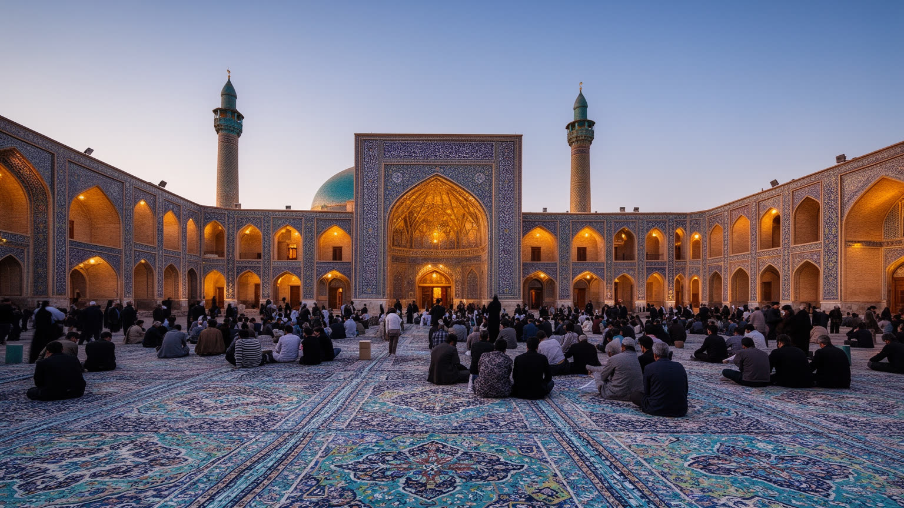
金曜モスクの高いミナレット、青いタイル、細長いイーワーンは、ヤズドのイスラム都市としての中心を示します。しかし宗教空間は記念写真の背景にとどまりません。フセイニーヤ、広場、路地、バザールは、ムハッラムの追悼行事、説教、寄付、商売、近隣関係を支える舞台です。アミール・チャグマーク複合体のような場所では、建築の正面性と群衆の記憶が重なります。信仰は個人の内面だけでなく、いつ店を閉め、誰に食事を配り、どの道を行列が通るかという都市の時間割を作ります。ゾロアスター教遺産が注目される一方で、ヤズドの多数派の日常はシーア派の儀礼と強く結びついています。宗教を観光資源としてだけ扱うと、住民が悲しみ、祈り、共同体を確認する場としての重さを見落とします。追悼の季節には、音、灯り、黒布、食事の配布が街の表情を変えます。参加する人、準備する人、店を支える人、交通を調整する人がいて、儀礼は広場だけでなく家庭と職場にも広がります。美しいモスクを鑑賞するだけでは、この都市で宗教が時間、労働、隣人関係を組み立てる力は見えてきません。ヤズドの儀礼空間は、建築と共同体が同時に働く場所です。都市の広場は、普段は待ち合わせや商売の場所であり、儀礼の日には記憶を共有する劇場になります。この二重性が、ヤズドの宗教景観を厚くしています。
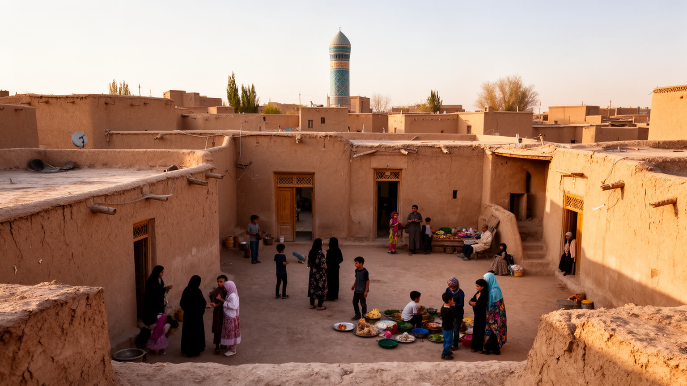
ヤズドの住宅は、外から見ると閉じた土壁の連続に見えますが、内部には中庭、樹木、水盤、日陰、家族の動線があります。通りに対して控えめに構え、家の内側で涼しさと私的な時間を作る構造は、気候、宗教、家族観が重なった結果です。屋上は夕方の風を受ける場所であり、地下室は夏の避難先でもありました。現代の暮らしでは、空調、車、集合住宅、大学、スマートフォン、外食が生活を変えています。若者はテヘランや海外へ進学、就職する選択肢を持ち、古い家は修復費や相続の問題を抱えます。観光宿へ転用される住宅も増え、保存と住民生活の均衡が問われます。ヤズドの日常を理解するには、旧市街の美しさだけでなく、家族がどの家に残り、誰が移り、どの仕事で暮らすのかを見る必要があります。市場で買い物をし、学校や大学へ通い、夕方に親族を訪ね、休日に庭園や郊外へ出る生活は、観光客の滞在時間よりずっと長いリズムで動きます。古い住宅を守るには、壁の修理だけでなく、住民が暑さ、水道、交通、医療、教育に困らない条件が必要です。暮らしが抜ければ、旧市街は美しい背景だけになってしまいます。日常生活は、家庭内の静けさと外の商業空間の往復でできています。路地の声、パンや菓子の買い物、夕暮れの屋上の涼しさが、都市の記憶を毎日更新します。生活の厚みもそこに残ります。
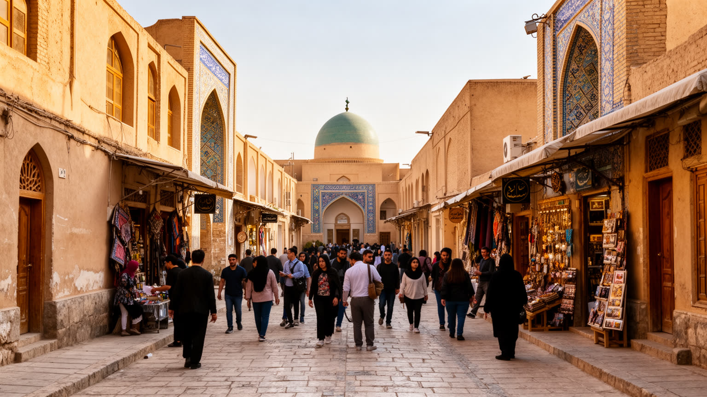
ヤズド旧市街は世界遺産として、風塔、迷路のような路地、日干しレンガの連続、庭園、モスク、拝火神殿を結ぶ観光地になっています。観光は宿泊、案内、飲食、修復、手工芸の仕事を生み、古い建物に新しい収入を与えます。一方で、観光客の視線は生活空間を舞台化し、住宅の宿泊施設化、価格上昇、住民向け商店の減少を招くことがあります。世界遺産の価値は、景観を凍結することではなく、人が住み続けながら都市の技術と記憶を継承する点にあります。写真に映る土壁が美しくても、修復技術者、住民、行政、宗教施設、店主の負担が偏れば、遺産は空洞化します。ヤズド観光を読むことは、訪問者の満足と住民の生活が同じ路地でどこまで共存できるかを見ることです。保存は経済政策でもあります。観光収入は若者の仕事を増やし、家屋の修復を後押ししますが、国際情勢や為替、航空路線の変化に左右されやすい弱さもあります。旅行者が減れば宿や土産物店はすぐに影響を受け、増えすぎれば住民の静けさが失われます。遺産都市の運営には、入場料や案内だけでなく、ごみ、交通、騒音、住宅、職人育成を含む地道な管理が欠かせません。旅行者は風塔や路地を短時間で通り過ぎますが、住民は同じ場所で眠り、働き、祈ります。この時間の差を調整できるかが、世界遺産都市の成熟を決めます。
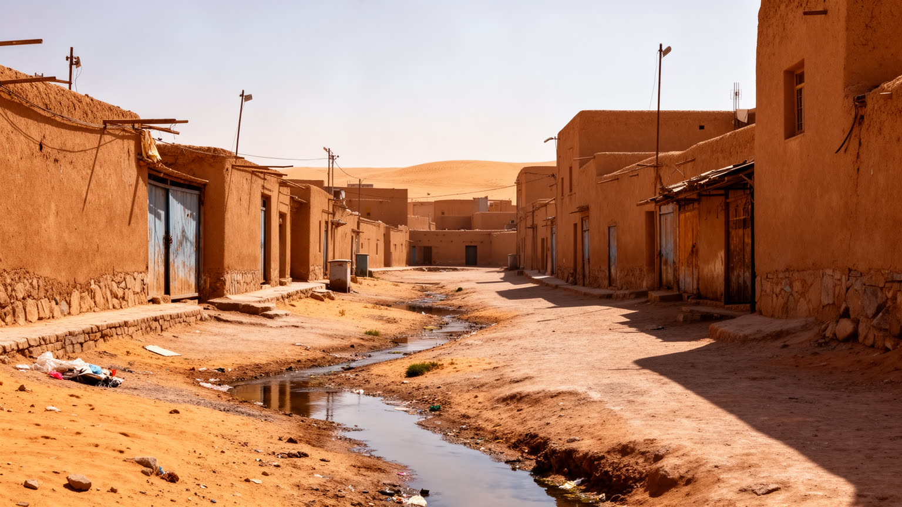
ヤズドは乾燥と暑さを前提に成り立つ都市ですが、気候変動と人口増加はその前提を厳しくしています。夏の高温、少雨、地下水の低下、砂塵、農業用水と都市用水の競合は、建築や観光だけでは解けない課題です。伝統的な風塔や中庭は低エネルギーの知恵を示しますが、現代の住宅、病院、学校、工場には安定した電力と水が必要です。暑さは高齢者、屋外労働者、低所得世帯、観光客に不均等に影響します。街路樹、日陰、断熱、公共交通、涼める公共空間、節水技術は、景観整備ではなく社会的な安全網です。水不足が進むほど、都市は周辺農村や地下水盆との関係を見直さなければなりません。ヤズドの気候適応は、古い技術への賛美だけでなく、誰が暑さと水の負担を負うのかを問う都市政策です。暑い日の観光案内、労働時間、学校の運営、病院への移動は、気温の数字だけでは測れない負担を生みます。裕福な世帯は空調で暑さを避けられても、電気代や住宅の質に制約がある世帯は影響を受けやすくなります。気候への備えは、古い街並みを守ることと同じくらい、住民の健康と働き方を守ることでもあります。乾燥地では、緑を増やすことも水を使う選択になります。だから日陰、舗装、建物配置、再利用水、節水型産業を組み合わせ、限られた資源を公平に配る発想が必要です。公平さが適応の核心です。
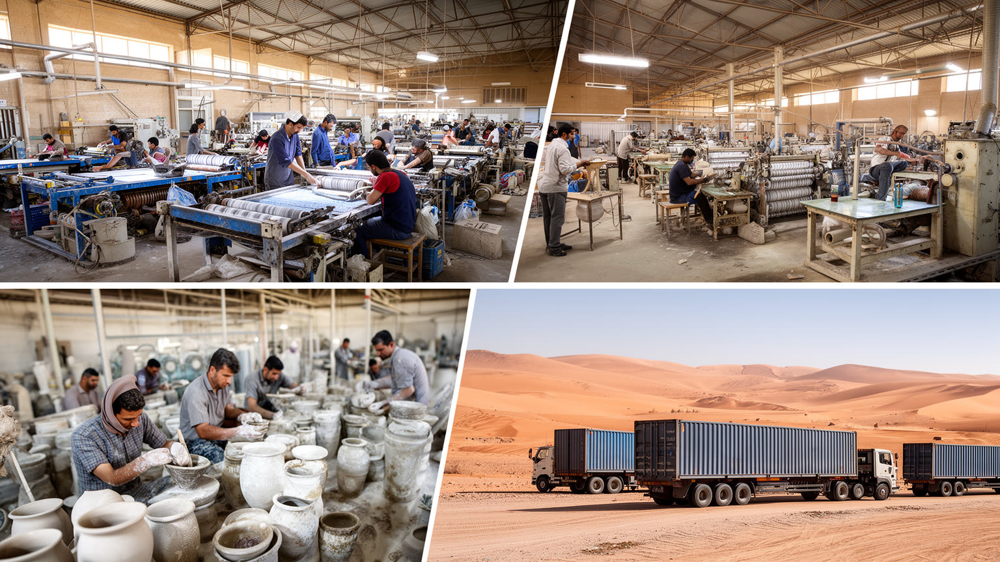
ヤズドは歴史都市であると同時に、イラン内陸の工業都市でもあります。繊維、陶磁器、建材、金属加工、機械、電線や光ファイバー関連、鉱業とその加工は、観光写真には映りにくい経済の柱です。周辺の鉱物資源、工業団地、道路と鉄道、大学の技術教育が結びつき、若い労働者や技術者を吸収します。制裁は設備更新、輸出入、金融決済を難しくし、インフレは賃金と生活費を揺さぶります。工場で働く人、運送業者、職人、観光業者、学生は同じ都市にいながら、収入、勤務時間、将来展望が大きく違います。ヤズドの経済を手工芸だけで語ると、現代の産業基盤を見落とします。逆に工業だけで語ると、土地の記憶や技能の連続性が消えます。都市の強さは、この二つをどう接続するかにあります。大学や職業教育は、地域に残る選択肢を増やす一方、優秀な若者を大都市へ送り出す通路にもなります。産業が水や電力を多く使えば、気候リスクとも衝突します。雇用を守りながら資源の消費を抑えることは、ヤズドにとって経済政策であると同時に環境政策です。工場の煙突と旧市街の風塔を同じ地図で読むと、都市の現在が見えてきます。労働の現場は、旧市街の店先だけでなく郊外の工業地帯にもあります。通勤、賃金、安全、技能訓練を含めて見ると、ヤズドは遺産都市である前に働く都市でもあります。
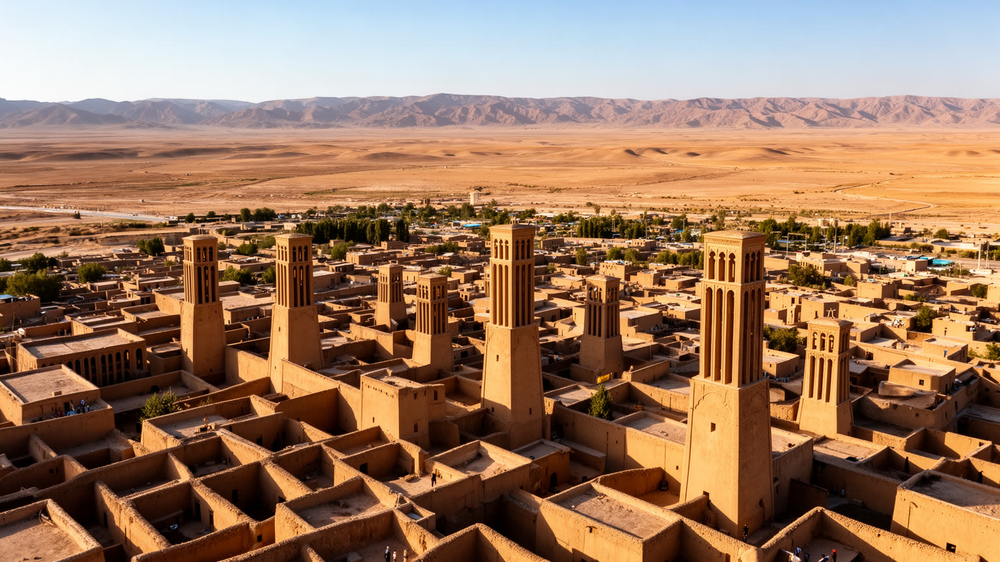
ヤズドは、世界金融や巨大港湾で目立つ都市ではありません。それでも世界都市地図に置く価値があるのは、乾燥地で人がどう都市を作り、信仰を守り、交易を続け、気候に適応してきたかを濃く示すからです。風塔とカナート、ゾロアスター教とシーア派儀礼、バザールと工業団地、世界遺産と住民生活は、互いに切り離せません。観光客が見る土色の景観の背後には、水をめぐる制度、少数派の記憶、制裁下の経済、若者の進路、猛暑への備えがあります。ヤズドを読むことは、都市の重要性を人口やGDPだけで測らない練習でもあります。大都市が空調と大量消費で暑さを隠す時代に、ヤズドは水、影、風、共同体の技術を見える形で残しています。その知恵を過去の遺産として保存するだけでなく、現代の住宅、観光、産業、気候政策へどうつなぐかが問われています。小さく見える都市でも、乾燥、宗教的多様性、制裁、産業転換、遺産保存という世界的な課題が重なっています。ヤズドの魅力は、静かな旧市街の美しさだけでなく、限られた資源をめぐる交渉が街の形に残っていることです。世界の暑い都市が増えるほど、ヤズドは過去の標本ではなく、未来の都市を考える参照点になります。評価の軸を経済規模だけに置けば、ヤズドの意味は小さく見えます。しかし、気候適応、宗教共存、職人労働、遺産管理を同時に読めば、この都市は乾燥地の世界を理解する重要な入口になります。